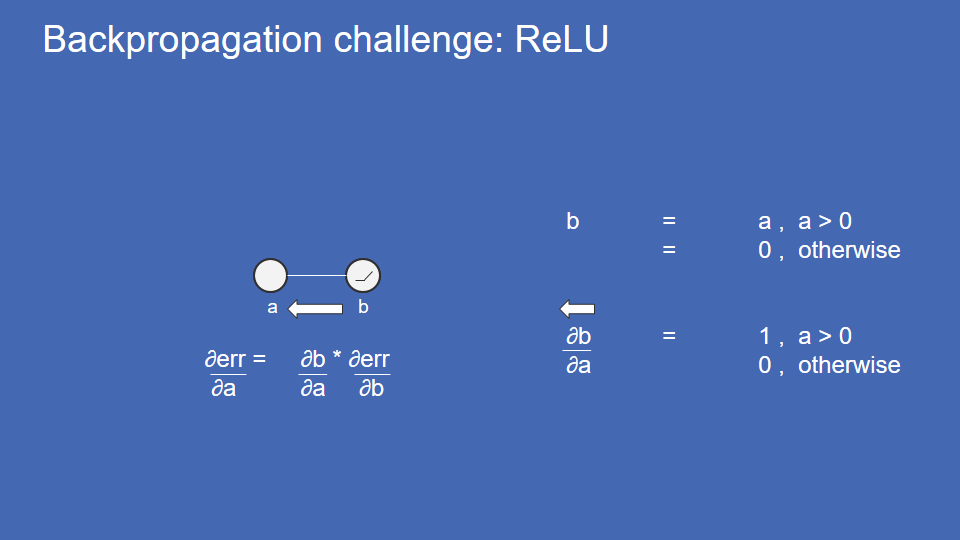

Get the slides

Neural networks are good for learning lots of different types of patterns.
To give an example of how this would work imagine you had a four pixel camera - not four megapixels but just four pixels - and it was only black and white and you wanted to go around and take pictures of things and determine automatically whether these pictures were of solid, all white or all dark image, vertical line or a diagonal line or a horizontal line.

This is tricky because you can't do this with simple rules about the brightness of the pixels. Both of these are horizontal lines but if you try to make a rule about which pixel was bright and which was dark you wouldn't be able to do it.
So to do this with the neural network you start by taking all of your inputs - in this case our four pixels - and breaking them out into input neurons and you assigning a number to each of these depending on the brightness or darkness of the pixel. +1 is all the way white, -1 is all the way black and gray is zero right in the middle.
So these values once you have them broken out and listed like this on the input neurons - it's also called the input vector or array - are just a list of numbers that represents your inputs right now .it's a useful notion to think about the receptive field of a neuron. All this means is what set of inputs makes the value of this neuron as high as it can possibly be. For input neuron this is pretty easy, each one is associated with just one pixel and when that pixel is all the way white, the value of that input neuron is as high as it could go. The black and white checkered areas show pixels that an input neuron doesn't care about if they're all the way white or all the way black, it still doesn't affect the value of that input neuron at all.
Now to build a neural network we create a neuron. The first thing this does is it adds up all of the values of the input neurons.
So in this case we add up all of those values, we get a point five.
Now to complicate things just a little bit, each of the connections are weighted, meaning they're multiplied by a number, that number can be 1 or -1 or anything in between, so for instance if something has a weight of -1, its multiplied and you get the negative of it and that's added in. if something has a weight of zero then it's effectively ignored, so here's what those weighted connections might look like.
You’ll notice that after the values of the input neurons are weighted and added, the final value is completely different. Graphically it's convenient to represent these weights as white links being positive weights, black links being negative weights and the thickness of the line is roughly proportional to the magnitude of the weight.

Then after you add the weighted input neurons they get squashed and I'll show you what that means.
You have a sigmoid squashing function, sigmoid just means s-shaped and what this does is you put a value in, let's say 0.5 and you run a vertical line up to your sigmoid and then a horizontal line over from where it crosses and then where that hits the y-axis, that's the output of your function. So in this case slightly less than point five, it's pretty close.
As your input number gets larger your output number also gets larger but more slowly and eventually no matter how big the number you put in the answer is always less than one, similarly when you go negative the answer is always greater than negative one.
So this ensures that neurons value never gets outside of the range of + 1 to – 1, which is helpful for keeping the computations in the neural network bounded and stable.
So after you sum the weighted values of neurons and squash the result you get the output, in this case 0.746, that is a neuron. So we can call this, we can collapse all that down and this is a neuron that does a weighted sum and squash the result
And now instead of just one of those assume you have a whole bunch, there are 4 shown here but there could be 400 or 4 million.
Now to keep our picture clear we'll assume for now that the weights are either +1 white lines, - 1 black lines or 0 which case they're missing entirely but in actuality all of these neurons that we created are each attached to all of the input neurons and they all have some weight between - 1 and + 1.
When we create this first layer of our neural network the receptive fields get more complex, for instance here each of those end up combining two of our input neurons and so the receptive field - the pixel values that make that first layer neuron as large as it can possibly be - look now like pairs of pixels, either all white or a mixture of white black depending on the weights.
So for instance this neuron here (upper-right) is attached to this input pixel which is upper-left and this input pixel (lower-left) and both of those weights are positive, so it combines the two of those and that's it's receptive field, the receptive field of this one (upper-left) plus receptive field of this one (lower-left). however if we look at this neuron (lower-right) it combines this pixel (upper-right) and this pixel (lower-right), it has a weight of minus one for the lower-right pixel so that means it's most active when this pixel is black, so here is its receptive field.
Now because we were careful of how we created that first layer, its values look a lot like input values and we can turn right around and create another layer on top of it the exact same way with the output of one layer being the input to the next layer and we can repeat this three times or seven times or 700 times for additional layers.
Each time the receptive fields get even more complex, so you can see here using the same logic now they cover all of the pixels and more special arrangement of which are black and which are white.
We can create another layer - again all of these neurons in one layer are connected to all of the neurons in the previous layer but we're assuming here that most of those weights are zero and not shown, it's not generally the case.

So just to mix things up we'll create a new layer but if you notice our squashing function isn't there anymore we have something new called a rectified linear unit. This is another popular neuron type so you do your weighted sum of all your inputs and instead of squashing, you do rectified linear units (you rectify it) so if it is negative you make the value 0, if it's positive you keep the value.
This is obviously very easy to compute and it turns out to have very nice stability properties for neural networks as well in practice.

So after we do this because some of our weights are positive and some are negative connecting to those rectified linear units we get receptive fields and they're opposites. You look at the patterns there.
And then finally when we've created as many layers with as many neurons as we want, we create an output layer. Here we have four outputs that we're interested in, is the image solid, vertical, diagonal or horizontal. So to walk through an example here of how this would work let's say we start with this input image (shown on the Left).
Dark pixels on top, white on the bottom. As we propagate that to our input layer this is what those values would look like: the top pixels (black), the bottom pixels (white). As we move that to our first layer we can see the combination of a dark pixel and the light pixel some together give us zero, gray. whereas down here we have the combination of a dark pixel plus a light pixel with a negative weight so that gets us a value of negative one there, which makes sense because if we look at the receptive field here, upper left pixel white, lower left pixel black. It’s the exact opposite of the input that we're getting and so we would expect its value to be as low as possible, -1.
As we move to the next layer, we see the same types of things combining zeros to get zeros, combining a negative and a negative with a negative weight - which makes a positive - to get a zero and here (at the bottom) we have combining two negatives to get a negative. So again you'll notice the receptive field of this is exactly the inverse of our input so it makes sense that its weight would be negative or its value would be negative.
And we move to the next layer, all of these of course zeros propagate forward. here this (previous layer, bottom) has a negative value and it gets has a positive weight so it just moves straight forward, because we have a rectified linear unit negative values become zero so now it is zero again too but this one gets rectified and becomes positive negative times a negative is positive and so when we finally get to the output we can see they're all zero except for this horizontal which is positive and that's the answer. Our neural network said this is an image of a horizontal line.
Now neural networks usually aren't that good not that clean. So there's a notion “what is truth”. In this case the truth is: this has a zero for all of these values but a one for horizontal, it's not solid, it's not vertical, it's not diagonal, yes it is horizontal.
An arbitrary neural network will give answers that are not exactly truth it might be off by a little or a lot and then the error is the magnitude of the difference between the truth and the answer given and you can add all these up to get the total error for the neural network.

So the idea the whole idea with learning and training is to adjust the weights to make the error as low as possible. So the way this is done is we put an image in, we calculate the error at the end then we look for how to adjust those weights higher or lower to either make that error go up or down and we of course adjust the weights in the way then make the error go down.
Now the problem with doing this is each time we go back and calculate the error we have to multiply all of those weights by all of the neurons values at each layer and we have to do that again and again, once for each weight, this takes forever on computing scale and so it's not a practical way to train a big neural network. You can imagine instead of just rolling down to the bottom of a simple valley we have a very high dimensional Valley and we have to find our way down and because there are so many dimensions, one for each of these weights, that the computation just becomes prohibitively expensive.
Luckily there was an insight that lets us do this in a very reasonable time and that's that if we're careful about how we design our neural network, we can calculate the slope directly the gradient. We can figure out the direction that we need to adjust the weight without going all the way back through our neural network and recalculating. So just review the slope that we're talking about is when we make a change in weight the error will change a little bit and that relation of the change in weight-the change in error is the slope. Mathematically there are several ways to write this. We’ll favor the one on the bottom. It’s technically most correct, we'll call it de/dw for shorthand. Every time you see it just think the change in error, when I change a weight or the change in the thing on the top, when I change the thing on the bottom. This does get into a little bit of calculus we do take derivatives, it’s how we calculate slope.
If it's new to you I strongly recommend a good semester of calculus just because the concepts are so universal and a lot of them have very nice physical interpretations which I found very appealing but don't worry otherwise just gloss over this and pay attention to the rest and you'll get a general sense for how this works.
So in this case if we change the weight by +1, the error changes by -2 which gives us a slope of -2. That tells us the direction that we should adjust our weight and how much we should adjust it to bring the error down. now to do this you have to know what your error function is.
So assume we had error function that was the square of the weight and you can see that our weight is right at -1, so the first thing we do is we take the derivative - change in error divided by change in weight de/dw. The derivative of weight squared is two times the weight and so we plug in our weight of -1 and we get a slope, de/dw of -2. now the other trick that lets us do this with deep neural networks is chaining and to show you how this works, imagine a very simple trivial neural network with just one hidden layer, one input layer, one output layer and one weight connecting each of them.
So it's obvious to see that the value Y is just the value X times the weight connecting them, W1. so if we change W1 a little bit, we just take the derivative of Y with respect to w1 and we get X, the slope is X. if I change W1 by a little bit then Y will change by X times the size of that adjustment. Similarly for the next step you can see that e is just the value Y times the weight W2 and so when we calculate dE/dY it's just W2.
Because this network is so simple we can calculate from one end to the other. X times W1 times W2 is the error E and so if we want to calculate how much will the error change if I change W1 we just take the derivative of that with respect to W1 and get X times W2. so this illustrates -you can see here now- that what we just calculated is actually the product of our first derivatives that we took dy/dw1 time's the derivative For the next step de/dy multiplied together. this is chaining. You can calculate the slope of each tiny step and then multiply all of those together to get the slope of the full chain, derivative of the full chain.
So in a deeper neural network what this would look like is if I want to know how much the error will change if I adjust a weight that's deep in the network, I just calculate the derivative of each tiny little step all the way back to the weight that I'm trying to calculate and then multiply them all together.
This computationally is many many times cheaper than what we had to do before of recalculating the error for the whole neural network for every weight. Now in the neural network that we've created there are several types of back propagation we have to do. There are several operations we have to do, for each one of those we have to be able to calculate the slope. so for the first one is just a weighted connection between two neurons a and b. so let's assume we know the change in error with respect to b, we want to know the change in error with respect to a. to get there we need to know db/da. so to get that we just write the relationship between b and a, take the derivative of b with respect to, you get the weight W and now we know how to make that step. We know how to do that little nugget of back propagation.
Another element that we've seen is sums. All of our neurons sum up a lot of inputs. to take this back propagation step, we do the same thing, we write our expression and then we take the derivative of our endpoints z with respect to our step toward propagating to a and dz/da in this case is just 1 which make sense if we have a sum of a whole bunch of elements. We increase one of those elements by one, we expect the alm to increase by one. That’s the definition of a slope of one, one-to-one relation there.
Another element that we have that we need to be able to back propagate is the sigmoid function. So this one's a little bit more interesting mathematically. I'll just write it shorthand like this -the Sigma function- it is entirely feasible to go through and take the derivative of this analytically and calculate it. It just so happens that this function has a nice property that to get its derivative you just multiply it by one minus itself, so this is very straightforward to calculate.
Another element that we've used is the rectified linear unit. Again to figure out how to back propagate this, we just write out the relation, b is equal to a if a is positive otherwise it's zero and piecewise for each of those we take the derivative so db/da is either one if a is positive or zero
And so with all of these little back propagation steps and the ability to chain them together we can calculate the effect of adjusting any given weight on the error for any given input and so to train then, we start with a fully connected Network.
We don't know what any of these weights should be and so we assign them all random values. We create a completely arbitrary random neural network. We put in an input that we know the answer to, we know whether it's solid, vertical, diagonal or horizontal. So we know what truth should be and so we can calculate the error. then we run it through, calculate the error and using back propagation go through and adjust all of those weights a tiny bit in the right direction and then we do that again with another input and again with another input for if we can get away with it many thousands or even millions of times and eventually all of those weights will gravitate, they'll roll down that many dimensional valley to a nice low spot in the bottom where it performs really well and does pretty close to truth on most of the images.
If we're really lucky it will look like what we started with intuitively understandable receptive fields for those neurons and a relatively sparse representation. meaning that most of the weights are small or close to zero that doesn't always turn out that way but what we aren't guaranteed is it'll find a pretty good representation of you know the best that it can do adjusting those weights to get as close as possible to the right answer for all of the inputs.
So what we've covered is just a very basic introduction to the principles behind neural networks. I haven't told you quite enough to be able to go out and build one of your own but if you're feeling motivated to do so I highly encourage it. Here are a few resources that you'll find useful you'll want to go and learn about biased neurons dropout is a useful training tool. There are several resources available from Andrej Karpathy who is an expert in neural networks and great at teaching about it. Also there's a fantastic article called the black magic of deep learning that just has a bunch of practical from the trenches tips on how to get them working well.
If you found this useful I highly encourage you to visit my blog and check out several other how it works style posts and de links for these slides you can get as well to use however you like there's also link to them down in the comment section.

Thanks for listening
Resources
- Andrej Karpathy's
- Stanford CS231 lecture
- Yes you should understand backprop
- The Black Magic of Deep Learning Nikolas Markou’s article